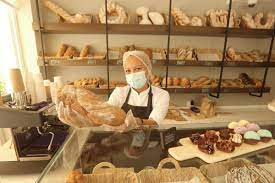
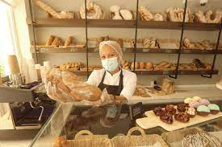

Tentaciones es una empresa familiar que materializa el sueño de sus tres fundadores, quienes motivados
por
el interés de cambiar el concepto de los postres,tartas y tortas, deciden buscar un lugar para la
producción y venta
de estas, encontrando en San Luis y alrededores excelente plaza para el desarrollo de su negocio, ya que
las
personas de esta provincia por su carisma y buen gusto han permitido que la empresa crezca y sea
reconocida
cada vez más.
Tentaciones inicia sus actividades en el desarrollo, producción y comercialización de productos como:
tortas, tartas y postres
identificada con un conejo propuesto por uno de sus fundadores, mediante el cual se busca representar la
dulzura de nuestros productos y de quienes los elaboran.
Para Tentaciones está claro que su principal deseo de crecimiento involucraba la suma de talento y la
unidad
familiar, por esto se suman a esta gran empresa emprendedores miembros de la familia, quienes dan un
fuerte
impulso de gestión, proyección y crecimiento.
Actualmente Tentaciones cuenta con puntos de venta en San Luis, distribuidos en diferentes sectores de
la
ciudad tales como: Centro: Av Illia, San Martin , Juana koslay Av del viento Chorrillero, proximamente
ciudad de La Punta
e igualmente haciendo presencia en los municipios de Rivera, Campoalegre y Garzón; buscando estar cada
vez
más al alcance de sus clientes para consolidarse como la pastelería más dulce de la zona; aquella que
inició
con cuatro empleados, hoy cuenta con un equipo de más de 40 colaboradores repartidos en las diferentes
sedes
y puntos de venta, que día a día brindan su mayor esfuerzo y amor para la elaboración de estos
deliciosos
productos y así poder ofrecer una excelente calidad para estar presentes en todos los momentos felices y
especiales de nuestros clientes.
 
